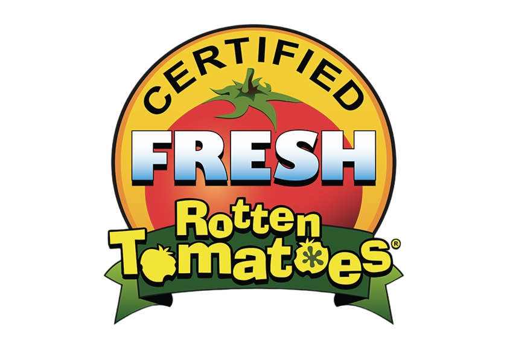
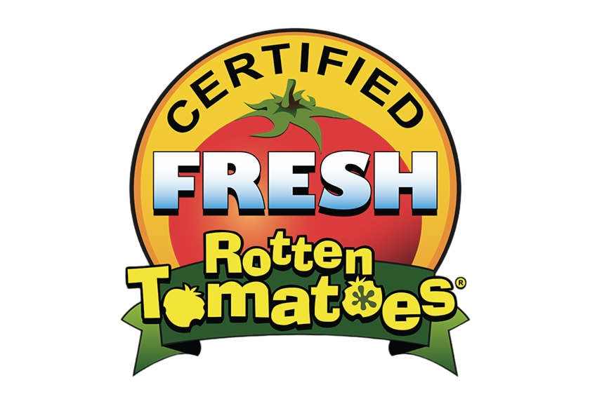

Rotten Tomatoes
|  | 72% |
| 374 Reviews | |
| 86% | |
| 100,000+ Ratings | |
|  | 72% |
| 374 Reviews | |
| 86% | |
| 100,000+ Ratings | |
"A lot has been said and written about Interstellar. You can obviously take apart any movie that is out there. You'll either love this one or you won't. I kind of would have loved to have watched this on an IMAX screen, the sheer scope of the whole thing. It's just amazing, what Nolan has put on screen here. It's not only the visual experience (there is no 3D here by the way), it's the story/ride you take with it. It might be clear to some earlier than to others, where it's heading (no pun intended), but it doesn't change the fact that it's beautiful ... and terrifying at the same time.
Going out and saying this will be considered a classic, might not be too far stretched, but you still can never predict those things. The deserved love the movie gets on IMDb and other places would be an indicator that this will ring true though. The acting is really good, but I can understand if some people have issues with the ending. But the movie had to end in one way or another. It's the best possible way this could go, even if it's not in our grasps just yet ..."
"I think just about everything has been said about this film now. But, I can still tell you what this masterpiece is to me. To me, this movie is possibly the most relevant movie ever, because it questions our own humanity relative to the Universe. Whether that's our ability to love, think, or persevere and walk into the unknown. We are explorers, and curious at heart. This untameable curiosity is not our end, but our beginning. It is what advanced this civilization and it will continue to do so. So never, never let anybody tell you that we shouldn't look towards the stars and wonder, because that's what makes us human. Without this stargazing we are merely animals, accepting our fate in the dust...""
Interstellar is a visual masterpiece that has a human touch that propels it to greatness. It is perhaps one of the best space movies ever made.
"Christopher Nolan isn’t one known to be taciturn when it comes to his movies. Even his smaller movies like Momento have grand structures bolstering their simple plots. However, Interstellar is easily is first brush with the epic — unless you consider the full Dark Knight trilogy as one. On paper, it should not work. A sweeping narrative covering different times and worlds would be eaten up by audiences. That’s why Gravity found so much success financially and at the Oscars. But Nolan does something completely different with Interstellar. He introduces science in a way that isn’t watered down or ignored. His film, according to astrophysicists, is completely plausible. Though that fact makes the movie a hard one to digest for viewers, the end result is an incredible study of human nature and our desire to survive."
"To infinity and beyond goes “Interstellar,” an exhilarating slalom through the wormholes of Christopher Nolan’s vast imagination that is at once a science-geek fever dream and a formidable consideration of what makes us human. As visually and conceptually audacious as anything Nolan has yet done, the director’s ninth feature also proves more emotionally accessible than his coolly cerebral thrillers and Batman movies, touching on such eternal themes as the sacrifices parents make for their children (and vice versa) and the world we will leave for the next generation to inherit. An enormous undertaking that, like all the director’s best work, manages to feel handcrafted and intensely personal, “Interstellar” reaffirms Nolan as the premier big-canvas storyteller of his generation, more than earning its place alongside “The Wizard of Oz,” “2001,” “Close Encounters of the Third Kind” and “Gravity” in the canon of Hollywood’s visionary sci-fi head trips. Global box office returns should prove suitably rocket-powered."